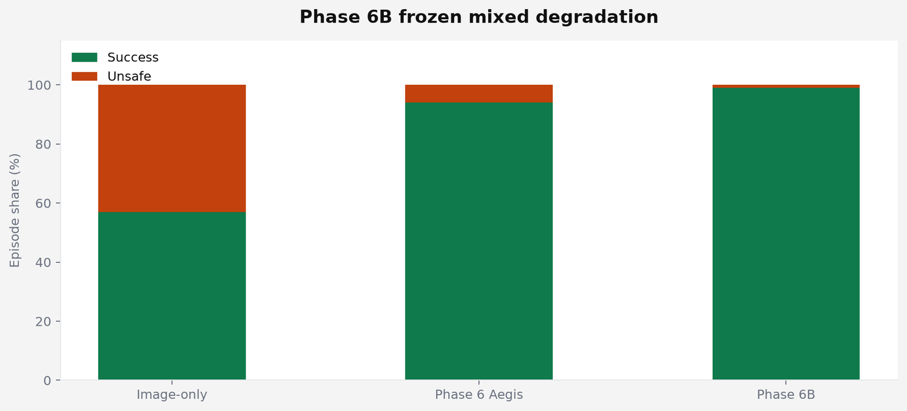
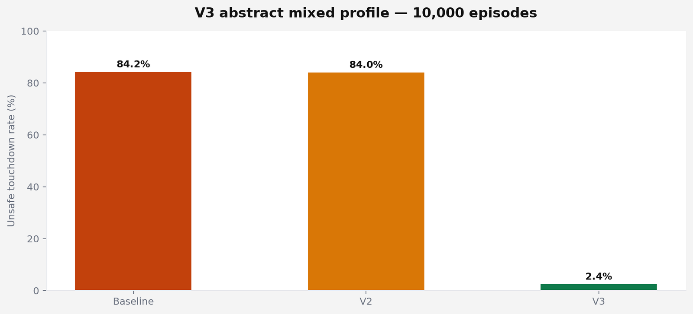
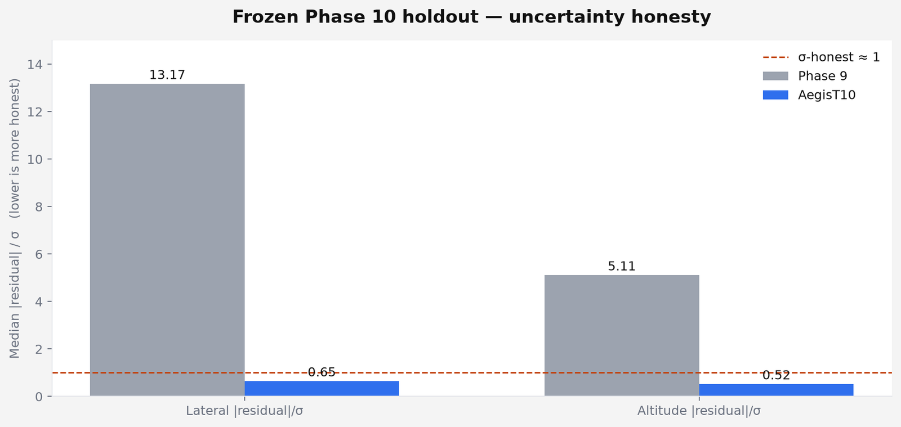

The question
If visual perception is internally consistent but systematically wrong, can independent evidence expose the error without making landing unusably conservative?
That is the whole program. Not “can I land a drone in Gazebo.” The failure mode that matters is a camera that looks calibrated, agrees with itself, and is still biased — then a vehicle that should have abstained.
Scope, said plainly
AegisLand is not validated flight-control software. Nothing here is a physical-flight safety acceptance. safety_acceptance = false. controller_tuning_allowed = false. Simulation only. CI green is not flight-safe.
Evidence ladder
Each layer is frozen or labeled seen. Later phases do not quietly rewrite earlier numbers.
-
6B
Synthetic landing + selective confidencefrozen held-out
Defined the synthetic benchmark: abstain when uncertain rather than touch down unsafe.
-
7–8
Stress factorial + PX4/Gazebo tracesaudited / seen
Where redundancy assumptions break. Phase 8 resemblance is diagnostic_mismatch, not a pass.
-
9
Genuine Gazebo camera evidenceexternal perception seen
Strong detection is not the same as trustworthy metric geometry.
-
10
Temporal metric + calibrated σfrozen holdout
Uncertainty honesty improved sharply. Point-error vs Phase 9 did not. Frozen mixed.
-
10R
Edge / partial-view generalizationfrozen holdout
Mean ambiguous-view error dropped. Tail, availability, and shift calibration gates failed. Frozen as-is.
-
11
Domain-shift-aware reliabilitynext phase
Next: does uncertainty know when its guarantees stop transferring?
Physical aircraft: not tested.
Phase 6B — selective confidence
On the synthetic landing benchmark, image-only temporal control left 43% unsafe episodes. Phase 6 Aegis cut that to 6%. Phase 6B selective confidence reached 99% success / 1% unsafe, paying a deliberate 3% timeout cost in low light rather than forcing a landing.

| Architecture | Success | Unsafe | vs image-only |
|---|---|---|---|
| Image-only temporal | 57% | 43% | — |
| Phase 6 Aegis | 94% | 6% | +37 pp success |
| Phase 6B selective | 99% | 1% | +42 pp success |
V3 — redundant perception
Smoothing a single biased stream does almost nothing. Independent error structure does. Baseline unsafe 84.2%; V2 temporal 84.0%; V3 redundant 2.4%.

| Architecture | Unsafe | Success | Lesson |
|---|---|---|---|
| Baseline | 84.2% | 15.8% | persistent visual bias remains dangerous |
| V2 temporal | 84.0% | 16.0% | smoothing does not expose single-stream bias |
| V3 redundant | 2.4% | 97.6% | independent error structure can expose the bias |
Phase 10 — honesty without a point-error win
AegisT10 did not beat Phase 9 centimeter-scale ArUco point estimates on the Gazebo-camera holdout. Every usable observation was already clean geometry, so temporal filtering had nothing catastrophic to rescue. What changed was uncertainty: median |residual|/σ moved from 13.17 / 5.11 (badly overconfident) to 0.65 / 0.52, with 2σ coverage 93% / 100%. The mixed result was frozen. Nothing was retuned after exposure.

The uncomfortable table — Phase 10R
The Phase 10R candidate was frozen at e1d566f8baa47bf10f9bdf39dd5988724208be80, then evaluated once on a protected holdout: 12 new geometry trajectories, three appearance conditions, 36 sequences, 1,440 truth-visible frames. Under the preregistered all-gates rule the overall result is mixed / failed. It is preserved without post-holdout retuning.
| Frozen gate | Result | Reading |
|---|---|---|
| Clean lateral / altitude MAE ≤ 1.10× Phase 9 | PASS | 0.704× / 0.417× |
| Ambiguous lateral MAE improvement ≥ 30% | PASS | 79.2% |
| Ambiguous altitude MAE improvement ≥ 30% | PASS | 73.7% |
| Ambiguous lateral p95 improvement ≥ 25% | FAIL | −1.1% |
| Ambiguous altitude p95 improvement ≥ 25% | FAIL | 7.3% |
| Truth-visible miss rate ≤ 10% | FAIL | 20.0% |
| False-positive rate ≤ 1% | PASS | 0.0% |
| 95% uncertainty coverage 90–98% | FAIL | 84.3% lat / 79.7% alt |
What Phase 11 is for
Not retuning 10R after seeing the holdout. Coverage under shift, tail failures, and principled abstention — whether the system can know when its guarantees have stopped transferring.
Limits
- Simulation only — no hardware-camera or physical-flight validation.
- Frozen 10R miss rate 20% against a ≤10% target.
- p95 gates failed; average gains did not remove the difficult error tail.
- The 10R holdout is now seen. It cannot be reused as a hidden test.
- Phase 10 camera holdout is small: 20 truth-visible, 15 paired observations.
Cite
Source of the figures and tables: suhaslord/uav-safety-research. Citation file on the repo: CITATION.cff.